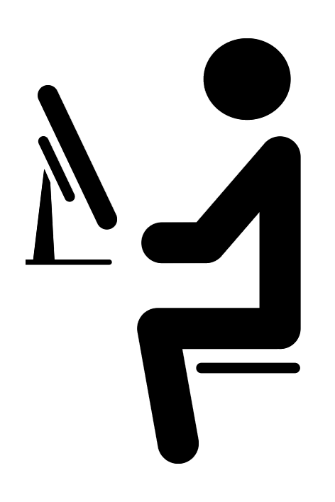
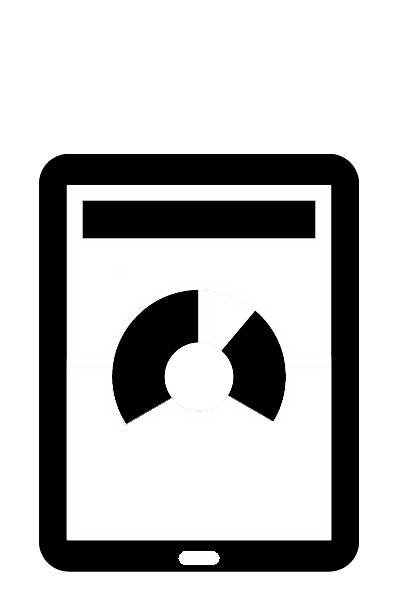
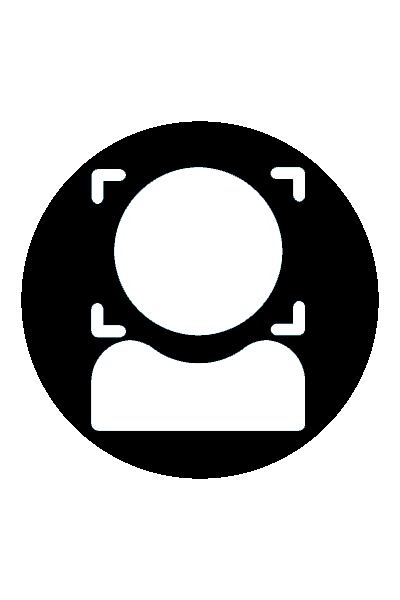

Synergy Solutions
| Strategic Thinking and Planning | Resources & Strategy Alignment | Stakeholder Alignment & Buy-In |
Engaging in strategic thinking and putting the market context, resources, structure, processes, products and services, stakeholders, clients, and your human capital in strategic perspective allows for advantages and value adding opportunities that go far beyond traditional planning approaches. Strategic planning will enable you to enhance your ability to better manage for results and add value through alignment. |
Having gained the desired strategic perspective, you and your organization are now in an advantaged position to align your selected strategy with your organizational resources. Strategic plans are far less value adding, and in fact often disruptive, if a strategic alignment of the plan is not undertaken with the organizational resources and with its operational strategies and plans for their strategic and tactical aligned implementation. |
 Creating a value adding strategic plan and its alignment with the resources of the organization will not create value or optimize performance unless you create stakeholder "buy-in" for the success of the plan and its strategic implementation. The real buy-in can only take place through inclusivity and when the team is asked for input, feels listened to and has an impact on the decisions. A value adding team needs to be well informed, educated and trained not only on all assigned roles and responsibilities, but also on the elements of organizational strategy for continued alignment and buy-in. |
|---|
| Talent Engagement | Empowerment | Incentivization & Commitment |
Take an organization with excellent non-human resources, technology, finances and strategy and put people with inadequate skills and lack of motivation in charge. They will soon place the organization in a downward spiral. However, if you take an organization with inadequate resources, technology, finances and strategy, but put capable and motivated people in charge, they will turn the organization around and put it on an upward spiral. Human capital is the most valuable asset of any organization. Acquiring the right talent, incentivizing and placing them in appropriate roles, therefore, is key to talent engagement. |
 Acquiring and retaining great talent, well informed and committed, is a key step to performance optimization. However, unless your talented team is empowered to contribute and optimally use their talent, capacities, and capabilities they cannot create the desired value and live up to your or their own performance expectations. Lack of empowerment for an optimized talented team will inevitably lead to lack of passion, complacency and mental or actual separation. |
 Great talent, well informed and well placed, has no reason to be committed to the organizational goals or its strategy for success even if it feels aligned with the vision and mission of the organization unless the goal attainment is incentivized for mutual value. Incentivization is critical to gaining commitment and mobilizing the value laden human capital towards creating passion and performance optimization. |
|---|
| Implementation & Measurement | Strategic & Tactical Realignment | Leading for Excellence |
 Alignment of resources and creating team passion is essential and critical for implementation and performance optimization. However, measurement and evaluation is as critical in determining whether you are on the right track, in line with your strategy, and responsive to your internal and external stakeholder desires and demands. Nothing stays constant and it is absolutely critical to set targeted parameters and conduct sustained and relevant measurements for realignment to stay on the path to value creation and excellence. |
 Organizations that excel in delivering the highest value are also clearly focused and develop the flexibility within their systems and organization to realign as needed. Creating the highest value requires the flexibility with modification of the strategic and tactical goals and their implementation, allocation of resources, the structure and processes of the organization, as well as its talent utilization to achieve excellence. |
A well informed, empowered, and incentivized team that is aligned with the vision, goals and the strategy of an organization cannot by itself optimize performance unless it is lead by capable and equally informed and passionate leadership. It is well documented in multiple related research findings that leadership's impact on a group is far greater and impactful than is recognized by most. Developing and optimizing leadership is essential to piloting the journey towards creating value and achieving excellence. |
|---|
More
Our team at SYNERGY MCG has learned that effectively solving a problem requires a targeted and accurate identification of the issues and problems to be addressed. Understanding the real issues and problems allows for the strategic generation of potential solution options. Selection of the optimal strategic options pursuant to cost/benefit and risk management analysis for each option will allow for organizational alignment and implementation. Fostering passion with the stakeholders for the newly Aligned strategy will then provide the synergy and the path for performance optimization and striving for excellence.